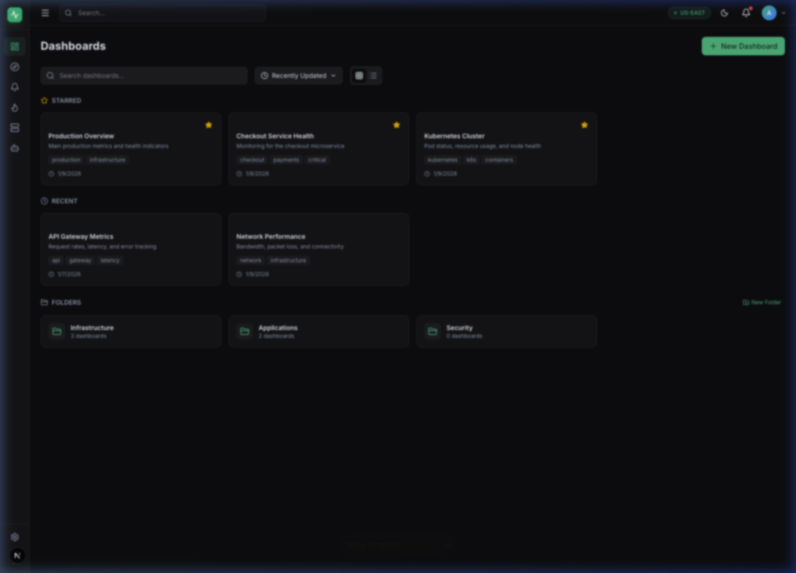

Unify metrics, logs, traces, and incidents into a single pane of glass. Reduce MTTR by 75% with AI-powered root cause analysis and an intelligent copilot.

Built for DevOps, SRE, and Platform Engineering teams who are tired of tool sprawl.
Ask questions in natural language. "Show me errors in checkout service" — and get instant answers backed by your real data.
Grafana-style drag-and-drop dashboards with 12+ widget types, real-time refresh, and template variables.
Correlation rules engine detects complex patterns — brute force, lateral movement, cascading failures.
AI-powered root cause analysis runs automatically on critical alerts, correlating metrics, logs, and related events.
Auto-discovered interactive service topology. Visualize dependencies and identify bottlenecks at a glance.
Pre-built runbooks for host isolation, credential reset, health checks — with step-by-step execution and audit trail.
A beautiful, responsive interface designed for efficiency.
A microservices architecture powered by proven open-source technologies.
Clone the repo, start Docker Compose, and have the full platform running in under 5 minutes.
git clone https://github.com/h18n/pulse.git && cd pulse